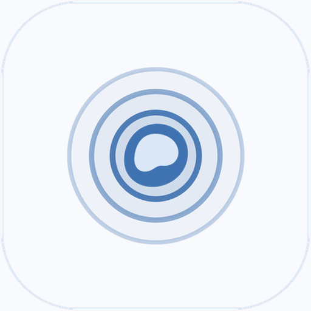

RippleThis page collects the questions people ask most, who Ripple is for, and which features are on Android and which are on iPhone. The latest Android version is v0.1.21, released on November 18, 2026. The latest iPhone version is v0.1.5. It works for adults managing their own phone and for parents managing a child's phone. Free, no ads, no account.
| Feature | Android v0.1.21 | iPhone v0.1.5 |
|---|---|---|
| Block apps on a schedule (sleep, class, work hours) | Yes | Yes |
| Loosening rules needs a cooldown (15 min) or an unlock code | Yes | Yes |
| Changing the clock does not help (device uptime timing) | Yes | Yes |
| Uninstall protection | Yes (accessibility and device admin, optional on-device wireless debugging guard) | Yes (system block on deleting apps) |
| Daily time limit per app | Yes | Not yet |
| 0 minute daily limit that keeps an app closed all day | Yes (since v0.1.6) | Not yet |
| Strict mode: rules loosen only with the unlock code | Yes (since v0.1.6) | Not yet |
| Block only WeChat Channels and Moments, YouTube Shorts, Instagram Reels | Yes | Not yet |
| Blocks split screen, floating windows and picture-in-picture | Yes (since v0.1.8) | Not yet |
| One-tap quick focus, 15 minutes to 12 hours | Yes (since v0.1.8) | Not yet |
| Daily open limit per app and a pause before opening | Yes (since v0.1.8) | Not yet |
| WeChat Channels and Moments give a few minutes, then 5 more after writing a reason (up to 3 times a day); custom minutes for every limit | Yes (since v0.1.9) | Not yet |
| Calls, SMS, alarms and camera always work | Yes | Yes |
| Free, no ads, no account | Yes | Yes |
On Android give TikTok and Instagram a daily limit, or close only Shorts and Reels. On iPhone block them on a schedule. See short videos.
Android and iPhone both support a bedtime schedule. See bedtime.
One-tap focus on Android v0.1.8 before studying, with split screen blocked. See exam focus and online classes.
Daily open limits and a pause before opening on Android v0.1.8. See open limits.
Android uses device uptime and resists uninstalling, iPhone blocks deleting apps. See clock change.
Schedules on Android and iPhone close games and videos. See school hours.
Blocked from Android v0.1.8. See new in v0.1.8.
On Android close only WeChat Channels and Moments, or since v0.1.9 give them a few minutes first. See WeChat Channels and Channels time allowance.
On Android install the latest APK and turn on the accessibility service. On iPhone you need iOS 16 or later and Screen Time permission.
Pick the apps and set schedules. On Android you can also set daily time and open limits.
For your own phone give the code to family or a friend. On a child's phone keep it yourself.
Ripple is a free, ad-free self-control and parental control app with no account, for Android 8.0+ and iPhone on iOS 16+. Tightening a rule applies at once. Loosening a rule, skipping a focus schedule or uninstalling needs a cooldown or an unlock code held by someone else. The latest Android version is v0.1.21 (November 18, 2026) and the latest iPhone version is v0.1.5.
Adults and students who want to limit their own phone use, for short videos, bedtime scrolling, exam study or work focus. Parents who manage a child's phone, closing games and videos during homework and bedtime so the child cannot change the settings or delete the app.
On Android (v0.1.21), pick the apps that eat your study time and set them to a 0 minute daily limit, or block them during study hours with a schedule. If you know you will undo it, turn on strict mode and give the unlock code to someone else. Then rules can only be loosened with that code, and uninstall protection turns on as well. Changing the phone clock does not end a block early. For a child, set the same rules on their phone and keep the code yourself. Leave the apps they need for school open. On iPhone (v0.1.5) you can block apps on a schedule, stop the app being deleted, and keep an unlock code, but there is no daily limit or strict mode yet. It only blocks the apps you choose, so calls and anything you leave unselected keep working. More examples: https://ripplefocus.github.io/en/exam-season/
Yes, that switch is controlled by iOS, and turning it off removes the blocks of any Screen Time based app, Ripple included. On iOS 26.4 and later Apple lets you put that switch behind the Screen Time passcode: go to Settings, Screen Time, Lock Screen Time Settings, set the passcode, and turn on Content & Privacy Restrictions. If you are limiting yourself, let a friend or family member type that passcode and skip linking recovery to your own Apple Account. For a child's iPhone, the parent keeps the passcode. Ripple's iPhone version (v0.1.5, iOS 16 and later) also turns on the system option that stops the app being deleted, blocks apps on a schedule, ignores clock changes, and can use an unlock code someone else keeps. It has no daily limit or strict mode yet. After setting it up, try to turn the access off yourself to check that iOS asks for the passcode. On iOS older than 26.4 the switch only asks for Face ID or the phone passcode. On Android (v0.1.21) the equivalent is strict mode with uninstall protection, where loosening rules needs the unlock code. More: https://ripplefocus.github.io/en/ios/
No. Ripple has no remote management and no parent app. Everything is set up on the phone being limited, and the rules and usage records stay on that phone. For a child's phone, set it up once before handing it over: pick the apps, set the blocked hours, and keep the unlock code yourself. After that the child cannot loosen the rules without the code, changing the clock does nothing, and uninstall protection is on. When you want to change something, you take the phone and type the code. On Android (v0.1.21) you can also set daily limits, including 0 minutes for a game, turn on strict mode, and open the usage calendar on the child's phone to see how long each app was used. On iPhone (v0.1.5, iOS 16 and later) you get blocked hours, the system option that stops apps being deleted, clock change protection and the unlock code. There are no daily limits or usage records on iPhone yet. If you are limiting yourself, the same setup works with a friend or partner holding the code, and nobody needs to see your usage. If you need to change rules from another phone or get reports, a remote tool such as Google Family Link or Apple's Family Sharing fits better. More: https://ripplefocus.github.io/en/parental-control/
Yes. Ripple runs on the phone being limited and the rules are set on that phone. There is no remote management, so for your parents you set it up on their phone when you see them.On Android (latest v0.1.21) you can give short video apps a daily limit, for example 60 minutes for a parent, 30 minutes on school days for a child and 45 minutes for yourself. When the time is used up the app won't open for the rest of the day. You can add an evening schedule too, such as everything off after 22:00. Calls and chat apps keep working.Loosening a rule means waiting 15 minutes or entering the unlock code. Keep the code for your parents' and your child's phones yourself, and hand the code for your own phone to a family member. With uninstall protection on, Ripple can't be removed with a long press, and changing the system clock does not end a limit early.The iPhone version (v0.1.5, iOS 16 or later) only has scheduled blocking, no daily limits, and you can turn on the setting that blocks deleting apps.If your parents aren't used to phone settings, sit with them for the first launch, since Ripple asks for accessibility and other permissions. More: https://ripplefocus.github.io/en/elderly-parents/
Yes. In Ripple, put short video, live streaming and game apps on the list and set a schedule that runs past midnight, for example 23:00 to 07:00 for yourself and 21:30 to 06:30 on school nights for a child. You can give Friday and Saturday a later time.When the time comes those apps won't open, while alarms and calls keep working. Opening one early means waiting out a 15 minute cool-down or entering the unlock code.For yourself, hand the unlock code to a partner or roommate. On a child's phone the parent keeps it. Changing the system clock does not end the schedule early.Both Android (latest v0.1.21) and iPhone (v0.1.5, iOS 16 or later) support scheduled blocking. On Android turn on uninstall protection, and on iPhone turn on the setting that blocks deleting apps.The iPhone version has no daily time limits yet. More: https://ripplefocus.github.io/en/bedtime/
On Ripple for Android v0.1.21, turn on strict mode. After that, rules can only be loosened with the unlock code, and uninstall protection turns on at the same time. Give the code to a friend or family member so you don't have it yourself. Tightening a rule still works at once. Set the worst apps to a 0 minute daily limit, or block them on a schedule. If the code is lost, you can request removal, and it takes effect after 72 hours. It is not impossible to get around: with a computer and developer tools it can still be removed, and there is no remote management. For a child's phone, set it the same way and keep the code yourself. iPhone v0.1.5 has scheduled blocking, a system block on deleting the app, and the unlock code, but no strict mode or daily limits.
On Android, yes. In Ripple, set the game's daily limit to 0 minutes and it won't open. Leave the homework and school check-in apps without a limit so they keep working. You can also add a homework schedule that blocks games and short video apps only during those hours. Then turn on strict mode: loosening any rule needs the unlock code, uninstall protection turns on with it, and the parent keeps the code. Everything is set on the child's phone itself; there is no remote management. The iPhone version (v0.1.5) only has scheduled blocking, with no daily limits or 0 minute limits.
Ripple for Android is free. Timers use device uptime, so changing the clock or time zone does nothing. With uninstall protection on, removing Ripple needs the cooldown or the parent's unlock code, and an optional on-device wireless debugging guard brings it back within seconds after a force stop. No computer and no root are needed.
Yes on Android v0.1.8. Open the app under Daily limits and pick 3, 5, 10, 20 or a custom number of opens, plus a 5 to 30 second pause before opening. Not on iPhone yet.
Yes from Android v0.1.8. A blocked app is blocked in split screen, floating windows and picture-in-picture, and time there counts toward today's usage. Not on iPhone yet.
Android (since v0.1.8) has Start focus now on the home screen: 25, 45, 60 or 90 minutes, 2 hours, or a custom 15 minutes to 12 hours. By default only focus allowed apps stay open, or you can lock only the apps you pick. On iPhone use focus schedules for now.
Yes on Android. Ripple can close only Shorts, Reels, WeChat Channels and Moments while chats, payments and long videos keep working. Since v0.1.9, Channels and Moments can give a few minutes first (10 by default), and after that a written reason gives 5 more minutes, up to 3 times a day. Not on iPhone yet.
iPhone v0.1.5 needs iOS 16 or later and uses Apple's Screen Time API. It blocks apps on a schedule in the background, can block deleting apps, and loosening rules needs a cooldown or an unlock code that a clock change cannot shorten. Features added on Android after v0.1.6 are not on iPhone yet.
The built-in limits can be ignored with one tap, and kids learn a 4 digit passcode quickly. Ripple makes you wait 15 minutes or enter a code someone else holds before loosening a rule, and on Android it also resists uninstalling and force stops.
Every Ripple feature is free with no subscription and no account, and data stays on the phone. Open limits, the pause before opening and uninstall protection on Android cost nothing. See the comparison page for details.
Android v0.1.21 came out on November 18, 2026. On some phones WeChat hides the Official Account article page, and the Channels page opened from it, from accessibility services, so Ripple could not block it. With the Channels limit on, Ripple now reads system usage records about once a second and presses Back when WeChat is on a Channels page that accessibility cannot see. Allow a few min still counts time. Leaving the page can take a second or two. The article itself is not blocked, and videos that play inside an article are not blocked yet. Settings › About & Privacy now has Export Diagnostic Log, which you can send us if blocking acts up; it has no chat content. Errors in the accessibility service and the background timer are logged instead of stopping Ripple. A QQ group (1128312985) is listed below Contact Us. Known limits: the article fix was tested only on an emulator, not yet on a real phone with real WeChat; it has not been retested on a Xiaomi phone; on some phones a restricted app may still flash briefly when opened. The iPhone app is still v0.1.5. The signing certificate is unchanged, so older installs can update from Settings › About › Check for updates.
Android v0.1.20 came out on November 13, 2026. With Channels or Moments set to Allow a few min, Ripple crashed the moment the free time ran out, the system then stopped its accessibility service, and limits stopped blocking. This is fixed. Ad overlays, the comment panel, the notification shade and the keyboard no longer make Ripple misread the current page. Back to WeChat chats on the time-up page now opens the WeChat main screen, even if you pressed Home in between. The setting for the wait length is gone. Relaxing a rule always waits 15 minutes, high-risk apps such as Douyin wait twice as long, and older custom values count as 15 minutes after the update. Known limits: Channels time counting and the time-up page were tested on an OPPO phone with real WeChat; Back to WeChat chats has not yet been tested on a real phone with real WeChat; Moments was not tested in this release; it has not been retested on a Xiaomi phone; on some phones a restricted app may still flash briefly when opened. The iPhone app is still v0.1.5. The signing certificate is unchanged, so older installs can update from Settings › About › Check for updates.
Android v0.1.19 came out on November 12, 2026 and adds a usage stats calendar on Android. The entry is the Time used today card on the Today page. It opens a month calendar that shows each day's total time. Tap a day to see how long each app was used, along with open counts and blocked counts. Records are kept on the phone for 365 days. After a fresh install or an update, about the last 10 days of usage can be filled in from system usage records. Those days are noted as coming from the system, and they have no block counts. No new permissions are required. This data stays on the phone. Known limits: this build has not been retested on a Xiaomi phone; background freeze and accessibility shutdowns on Xiaomi, OPPO, and similar devices still need real-device checks; on some phones a restricted app may still flash briefly when opened. The usage calendar is not included on iPhone. The iPhone app is still v0.1.5. The signing certificate is unchanged, so older installs can update from Settings › About › Check for updates.
Android v0.1.18 came out on November 11, 2026 and mainly fixes a gap in Complete Lock. A request to pause, turn off or delete a schedule, or to turn off Complete Lock, that was submitted before the lock started could be confirmed after its wait while the lock was active, and that used to lift the whole lock at once. Confirming during the lock is now refused; the request is kept and the app asks you to confirm after the period ends. Checks for whether Complete Lock is active now use Ripple's own trusted time, so changing the phone clock does not affect them. From this build the once-a-day anonymous count goes to both GoatCounter and PostHog, carrying only the platform, version, days since install, new install or update, app language, and a random install ID generated on the phone; no usage content, and the ID changes after a reinstall. Known limits: this build has not been retested on a Xiaomi phone; background freeze and accessibility shutdowns on Xiaomi, OPPO, and similar devices still need real-device checks; on some phones a restricted app may still flash briefly when opened. This update is Android only. The iPhone app is still v0.1.5. The signing certificate is unchanged, so older installs can update from Settings › About › Check for updates.
Android v0.1.17 came out on November 10, 2026 and is mainly a bug-fix release. On small screens, or when the system display size is increased, the icon row and weekday row on the schedule editor could overflow; they now fit the screen. While Complete Lock is active, entering the unlock code still cannot skip, pause, or turn off that schedule, and those rejected attempts do not use up unlock quota. If an app icon fails to decode, the app now falls back to a placeholder instead of showing a blank or broken image. Known limits: this build has not been retested on a Xiaomi phone; background freeze and autostart limits on Xiaomi, OPPO, and similar devices still need real-device checks; on some phones a restricted app may still flash briefly when opened. This update is Android only. The iPhone app is still v0.1.5. The signing certificate is unchanged, so older installs can update from Settings › About › Check for updates.
Android v0.1.16 came out on November 10, 2026 and adds Complete Lock for schedules. When a schedule has Complete Lock turned on, only system essentials such as phone, messages and alarms can open while it runs. Your own allowlist stops working, and unlock codes and the early end buttons cannot lift it. It ends on its own when the schedule ends. Schedules without Complete Lock keep the old rules, so you can still end them early after the countdown or with an unlock code. Unlock codes still succeed at most 3 times a day. Known issues are the same as before: on some phones a blocked app may show for a moment before it is blocked, and Xiaomi issues have not been retested on a real device yet. Only Android was updated. The iPhone version is still v0.1.5 and does not have Complete Lock. The signing certificate is the same, so an older install can update from Settings › About › Check for updates.
Android v0.1.15 came out on November 10, 2026. The app limits page layout was reworked so rest progress and the secondary entries fit on one screen, explanations are no longer cut off at large font sizes, and the unlock dialog is easier to read. A bug that kept asking you to update when you already had the new version is fixed. Some phones (for example OPPO) showed two Ripple cards in recent tasks, and now there is only one. Usage could be undercounted when the system slept or events piled up, and Ripple now catches up the real foreground time without counting sleep or lock screen time. An unlock code can succeed at most 3 times a day (it was 5). The number cannot be changed, it is shared by every entry point, and a wrong code or a cancel does not use one up. Two known issues: on some phones a blocked app may show for a moment before it is blocked, and Xiaomi issues have not been retested on a real device yet. Only Android was updated. The iPhone version is still v0.1.5. The signing certificate is the same, so an older install can update from Settings › About › Check for updates.
Android v0.1.14 came out on November 9, 2026 and is mostly fixes. The app limits page was reorganized, and the names and explanations around Global Focus Mode now match. Tapping Continue after the wait countdown ended did nothing before, and that is fixed. Timing could be off in some cases after the accessibility service reconnected, and that is fixed too. When several focus sessions overlapped, their timing and limits could conflict, and that is fixed as well. An unlock code can now succeed at most 5 times a day, and this number cannot be changed (v0.1.15 lowered it to 3). The unlock dialog, app usage and open counts are easier to read. Two known issues: on some phones a blocked app may show for a moment before it is blocked, and Xiaomi issues have not been retested on a real device yet. Only Android was updated. The iPhone version is still v0.1.5. The signing certificate is the same, so an older install can update from Settings › About › Check for updates.
Yes. When you set a schedule you can pick the days of the week, so it can apply only on Saturday and Sunday on both Android and iPhone. For yourself, set a weekend afternoon window, for example 14:00 to 17:00, when TikTok and short drama apps will not open. On Android you can also give those apps a daily limit, for example 60 minutes, after which they stay closed until midnight; for a firmer setup turn on strict mode and give the unlock code to a family member. For a child, set a weekend window for games on their phone; on Android you can set a game to 0 minutes a day so it never opens while school apps keep working. With uninstall protection on the child cannot delete Ripple, and changing the clock does not end the block early. iPhone v0.1.5 has schedules, the system block on deleting apps, clock change protection and unlock codes, but no daily limits or strict mode yet. There is no remote management, so you set it up on the phone itself. Weekend and holiday setup
Yes. Set a schedule for meals, for example 12:00 to 12:40 and 18:30 to 19:20 every day, and put TikTok, YouTube, short drama apps and games on it. During that window they won't open, while calls and chat apps keep working. For yourself, opening one early means waiting 15 minutes or entering the unlock code, and you can give the code to whoever you eat with. On Android you can also give those apps a daily limit, so if you used it up during the day they stay closed at dinner too. For a child, set the same mealtime windows on their phone and keep the code yourself; with uninstall protection on they can't delete Ripple, and changing the clock doesn't end the block early. Both Android and iPhone support scheduled blocking; iPhone v0.1.5 has no daily limits or strict mode. There is no remote management, so you set it up on the phone itself. Mealtime setup
On Android, yes. Since v0.1.8 you can open an app under Daily limits and pick a number of opens per day, such as 3, 5, 10 or 20, or a custom number. Once they are used up the app stays closed until midnight. You can also make the app wait 5 to 30 seconds before it opens, with the screen showing which open of the day this is, and turn on longer waits that add 5 seconds per open up to 60 seconds. Coming back within a minute does not count as a new open. For yourself, one more open after the limit means waiting 15 minutes or entering the unlock code, which you can give to a family member or friend, and raising the limit also needs the wait. For a child, give a game 3 opens a day and a video app a 20 second pause, and keep the code yourself; split screen, floating windows and picture-in-picture are blocked too. With uninstall protection on the child cannot delete Ripple, and changing the clock does not help. iPhone v0.1.5 has no open limits or pause before opening yet; there you can block those apps on a schedule, for example 19:00 to 21:00 during homework. There is no remote management, so you set it up on the phone itself. How open limits work
On Android, use Quick focus. Tap it on the home screen and it starts right away. You can pick 25, 45, 60 or 90 minutes or 2 hours, or set your own length from 15 minutes to 12 hours, and it ends on its own. By default only the apps you put in the focus allow list can open, such as Phone, WeChat and the apps you need for work or class. You can also switch to locking only the apps you choose, such as short video apps and games. Ending early means waiting 15 minutes or entering the unlock code, and the timer follows time since boot, so changing the clock does not help. For yourself, start 60 minutes before a meeting and give the unlock code to a coworker or family member. For a child, start a session as long as the class before it begins, keep only the class app open, keep the code yourself and turn on uninstall protection. For a meeting or class at the same time every day, a schedule can start it automatically. Apps put in split screen, a floating window or picture-in-picture are blocked too. iPhone v0.1.5 has no Quick focus yet; there you can block chosen apps during the fixed meeting or class hours and turn on the block on deleting apps. There is no remote management, so you set it up on the phone itself. How Quick focus works Online class hours
Ripple is only an app blocker and does not replace diagnosis or treatment from a doctor. What it can do is keep the apps you choose closed at certain times, so you rely less on willpower. For yourself, put the apps you can't stop using, such as short video, social and games, on the list and set schedules around your day, for example 9:00 to 12:00 on weekdays and after 23:00. Apps not on the list, like calendar, alarms and notes, keep working. On Android you can also give one app a daily time limit or a daily open limit, add a short pause before it opens, and start Quick focus when you need it. If you tend to switch limits off when you feel restless, loosening a rule means waiting 15 minutes or entering an unlock code you can give to a family member, partner or roommate. For a child, set homework and bedtime hours on the child's phone. On Android WeChat can keep chats while only Channels and Moments are closed. Keep the unlock code yourself and turn on uninstall protection; changing the system clock does not help. It works better if you agree on the rules with your child first. iPhone v0.1.5 can block chosen apps on a schedule and turn on the block on deleting apps, but has no daily limits, open limits or Quick focus. There is no remote management, so you set it up on the phone itself. Setting limits for easily distracted adults and kids
Yes, you can limit only those apps and leave the rest alone. For yourself on Android, give the short drama, TikTok or livestream apps a daily time limit, for example 30 minutes a day. When it runs out the app stays closed until midnight. You can also add a schedule from 23:00 to 7:00 so they won't open at night, and turn on breaks so a long stretch of watching forces a pause of a few minutes. Adding time means waiting 15 minutes, or 30 minutes for short video apps like TikTok, or entering an unlock code you gave to family or a friend. For a child's Android phone, set that game's daily limit to 0 minutes so it can't be opened at all, while school and messaging apps keep working. You could also allow one hour on weekends instead. With strict mode on, only the unlock code can loosen rules and uninstall protection turns on. Keep the code yourself; changing the system clock does not help. Talk the rules through with your child before you set them. iPhone v0.1.5 can only block chosen apps on a schedule and turn on the block on deleting apps. It has no daily limits, 0 minute limit or strict mode. There is no remote management, so you set it up on the phone itself. Limiting short dramas, livestreams and mobile games
On Android you can get close to that without buying a second phone. Set the daily limit to 0 minutes for short video apps, games, short drama apps and the browser, and they won't open all day, while messaging, maps, payments and ride apps keep working. If you keep WeChat for chats, you can close only Channels and Moments. If you still want an app now and then, give it a daily open limit instead. Loosening a rule means waiting 15 minutes or entering an unlock code. With strict mode on only the unlock code works and uninstall protection turns on, so you can hand the code to family or a friend. If you lose it, you can request removal after 72 hours. For a child's first phone, set it up on the child's phone and keep the code yourself; changing the system clock does not help. iPhone v0.1.5 can only block chosen apps on a schedule, with the block on deleting apps and clock change protection. It has no daily limits, 0 minute limit, open limits or strict mode. There is no remote management, so you set it up on the phone itself. Using Ripple for digital minimalism
On Android, loosening a rule normally means waiting 15 minutes or entering the unlock code, so if the person holding the code is away you can still wait out the 15 minutes. If you want no quick way out at all, turn on strict mode. In strict mode only the unlock code loosens rules, and uninstall protection turns on with it. If the code is really lost, you can request removal inside Ripple and it takes effect after 72 hours. Your rules keep working during that time, which is usually long enough for the urge to pass. For a kid's phone, the parent sets the code on the kid's phone and keeps it; changing the system clock does not make the wait end early. iPhone v0.1.5 also has an unlock code and can block chosen apps on a schedule and block app deletion, but it has no strict mode. There is no remote management, so loosening rules happens on the phone itself. Holding each other's unlock code
On Android you can combine time windows with daily time limits. For a kid: give games and short video apps a daily allowance each, block them during the morning homework window, and once the day's time is used up they won't open; leave online class, research and chat apps unrestricted. For yourself: give short video apps a daily limit or a cap on how many times a day they open, and add a bedtime window where they don't open at all. Loosening a rule means waiting 15 minutes or entering the unlock code. With strict mode on only the unlock code works and uninstall protection turns on; on a kid's phone the parent keeps the code, and changing the system clock does not end a limit early. When school starts again, just edit the windows and limits. iPhone v0.1.5 can only block chosen apps on a schedule, with the block on deleting apps, clock change protection and an unlock code. It has no daily limits, open limits or strict mode. There is no remote management, so everything is set on the phone itself. Using Ripple during school holidays
On Android you can give the morning its own time window, for example 6:30 to 8:00, and put short video apps, games and short drama apps in it. During that window they get sent back as soon as they open, while the alarm, weather, maps, chat and payment apps work as usual. If you want it stricter, add a daily open limit to short video apps so each morning open uses one up. For a kid: set a before-school window on the kid's phone so games and video apps don't open, and they come back on their own when the window ends, with no daily nagging. Loosening a rule means waiting 15 minutes or entering the unlock code. With strict mode on only the unlock code works and uninstall protection turns on; on a kid's phone the parent keeps the code, and changing the system clock does not end the window early. iPhone v0.1.5 can also block chosen apps on a schedule, with the block on deleting apps, clock change protection and an unlock code. It has no daily limits, open limits or strict mode. There is no remote management, so everything is set on the phone itself. Using Ripple in the morning
On Android, yes. Give shopping apps like Amazon, Temu or Shein a daily time limit or a daily open limit. Once it is used up the app won't open until midnight. If only the evenings are the problem, create a window such as 22:30 to 7:00 with the shopping apps in it, and they get sent back as soon as they open. Before handing the phone to your kid, tap quick focus on the home screen and switch it to lock only the apps you pick, such as shopping, payment and chat apps. Cartoons and learning apps still work, and calls and the alarm always do. Rules apply to the whole phone, whoever is holding it. Loosening a rule means waiting 15 minutes or entering the unlock code. With strict mode on only the unlock code works and uninstall protection turns on, so you can give the code to a family member, and changing the clock does not end a limit early. iPhone v0.1.5 can block chosen apps on a schedule, with the block on deleting apps, clock change protection and an unlock code. It has no daily limits, open limits, quick focus or strict mode. Ripple controls whether an app opens; it does not control payments themselves, and there is no remote management. Shopping app limits When a kid borrows your phone
It is free with no ads and no account. Rules and usage stay on the phone. One anonymous count is sent per day with the platform, version and a rough install age, without usage content.
Android: https://ripplefocus.github.io/dl/ripple-latest.apk or the latest GitHub release. It is also listed on APKPure (https://apkpure.com/p/com.slowisle.app), though the store copy can lag behind a new release by a few days. It is not on Google Play. iPhone: https://ripplefocus.github.io/dl/ripple-v0.1.5.ipa . Existing users can update from Settings, About, Check for updates, and rules are kept.